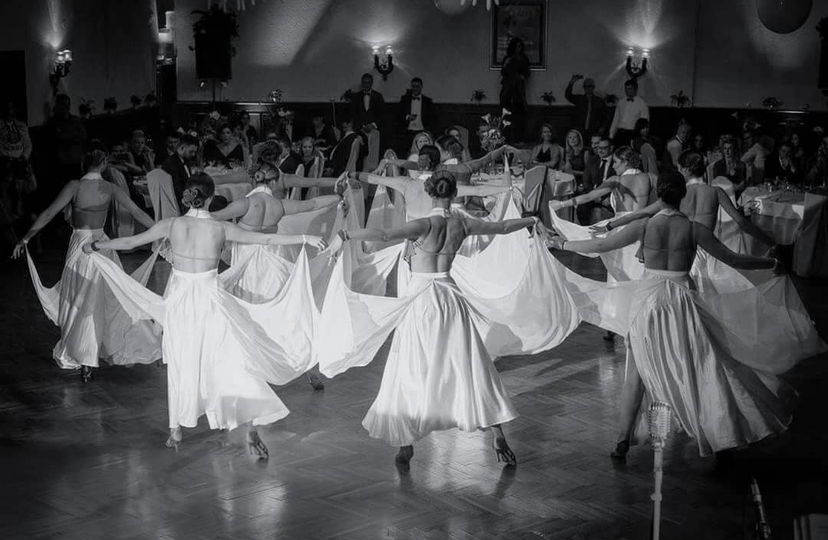
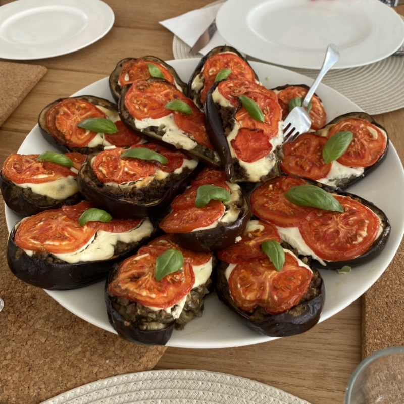
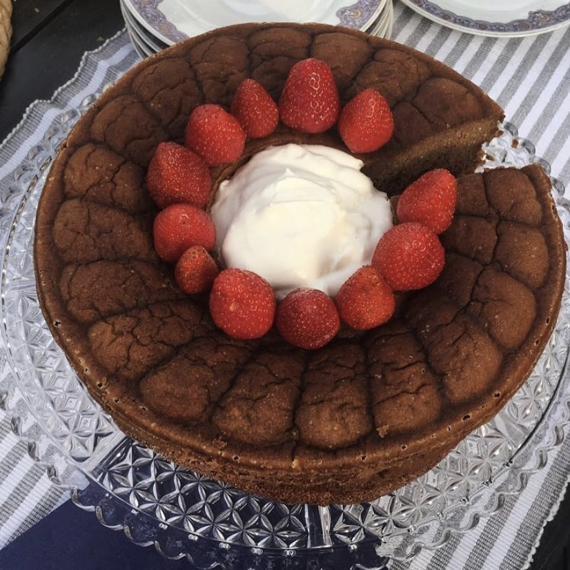
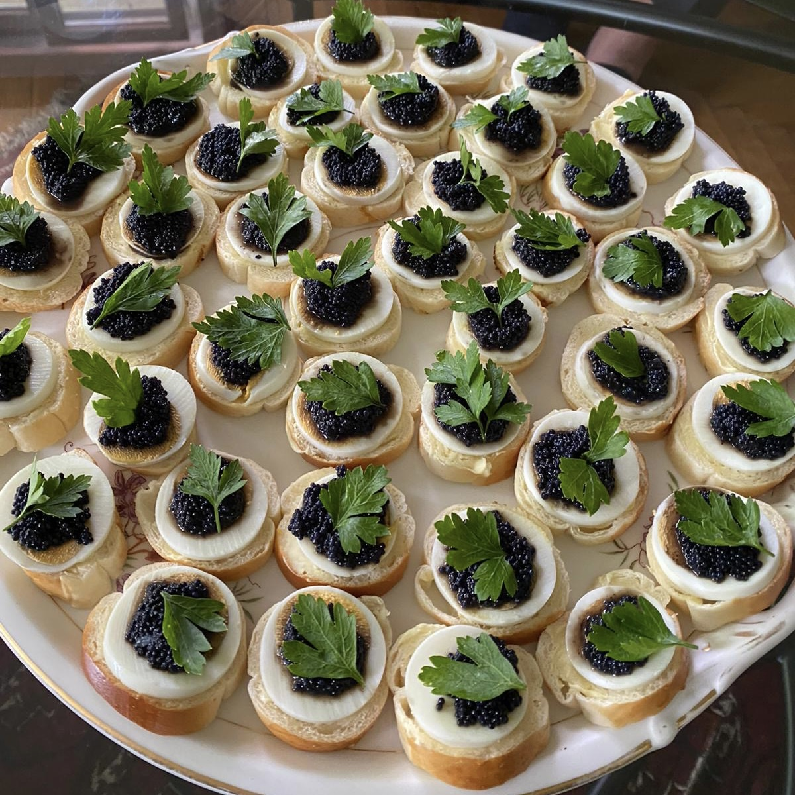
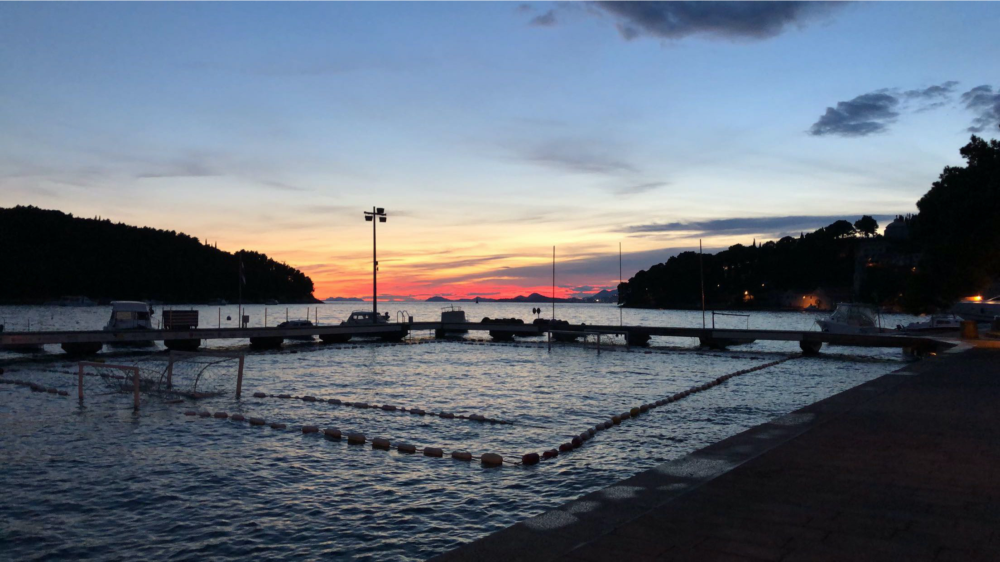

Hello, I'm Nadja Stanisavljević

I'm a student at ESSEC Business School from Belgrade, Serbia 🇷🇸. I love dance, cooking and travelling. Currently, I am looking for an operational internship to gain as much experince as I can, in order to use it when I build my own company.
Have a look at my LinkedIn profileDANCE
I am passionate about latin-american dance. I have actively practiced it for 5 years, and competed regionally and nationally.
COOKING
  Ever since I was little I've loved helping my mom cook our family meals. I enjoy experementing with food, and dream of opening my own restaurant some day. That way I would be able to give other people a taste of my family's recipes, as well as creating my own.
TRAVELLING
One of my other favorite things is to travel, and immerse myself in new enviroments and cultures. Weather it's going to the beach, or up the mountains, I love to get out of my city, which I am beyond attached to, and just explore.